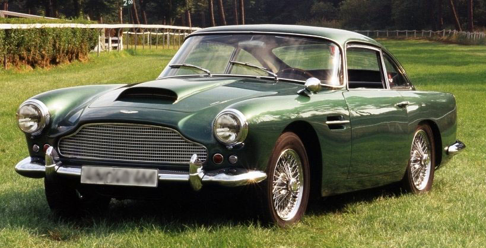

Dopo solo due anni dalla sua nascita l'Aston Martin sembra già essere arrivata al capolinea complice l'arrivo delle prima guerra mondiale. Vedremo come ha saputo reinventarsi, cambiando più volte proprietà, superando non una, ma due guerre mondialit, senza perdere mai il suo fascino.
L'evoluzione nel tempo del logo della Aston Martin (mettere immagine dei loghi)
Nel 1913 il meccanico Robert Bamford e il pilota Lionel Martin, già bene inseriti nel settore dell' automobile, decisero di unire le loro capacità e fondare la "Bamford & Martin", una concessionaria per la vendita di automobili prodotte dalla Singer, dotata di officina per le riparazioni.
Nel 1914, i due soci realizzarono un prototipo da competizione in proprio, adattando un motore Coventry Simplex a un vecchio telaio Isotta Fraschini. Con tale vettura Martin vinse la cronoscalata Londra-Aston Clinton e, in ricordo di questa vittoria, fu deciso di rinominare il veicolo "Aston Martin": nacque così la futura denominazione della casa automobilistica.
Allo scopo di sfruttare il successo ottenuto, decisero di costruire altre vetture sportive destinate alle competizioni, ma l'inizio della prima guerra mondiale rimandò i loro propositi. Martin e Bamford furono richiamati sotto le armi e i macchinari vennero requisiti per essere destinati a scopi bellici.
Al termine del conflitto l'azienda "Bamford & Martin" venne riaperta, ma le ristrettezze economiche del dopoguerra non facevano sperare in un futuro roseo. Robert Bamford abbandonò la società nel 1920 e poco dopo anche Martin sarebbe stato costretto a chiudere i battenti, se non fosse intervenuto economicamente il pilota Luis Zborowski, un nobile franco-polacco di enorme ricchezza.
Dopo il risanamento economico, le fasi di progettazione e di sviluppo proseguirono celermente e, nel 1922, vennero presentate le prime vetture destinate alle competizioni automobilistiche. Nonostante l'impiego in gare di grande prestigio, come alla 24 ore di Le Mans, i modelli non furono confortati da successo sportivo, né da successo economico. La "Aston Martin" si barcamenò per quattro anni, costantemente sull'orlo della bancarotta, fino alla dichiarazione di fallimento e al definitivo ritiro di Lionel Martin, dopo una produzione di 55 autotelai, variamente carrozzati.
Nel 1926 la "Bamford & Martin" in fallimento fu acquisita dai soci Bill Renwick e Augusto Cesare Bertelli, proprietari della "Renwick e Bertelli", un'azienda che produceva motori aeronautici e che, avendo messo a punto il primo propulsore automobilistico, trovò conveniente rilevare un marchio già noto in campo sportivo. L'azienda venne rinominata "Aston Martin Limited" e trasferita negli opifici della società acquirente, a Feltham.
La direzione commerciale della Aston Martin venne assunta da Renwick, mentre la direzione tecnica fu appannaggio di Bertelli che aveva una buona esperienza nel settore, essendosi formato come progettista e pilota nel reparto corse FIAT. Bertelli rimase alla direzione tecnica della Aston Martin per 12 anni, fino al suo ritiro, determinando un grande prestigio sportivo per le vetture dell'azienda che in quegli anni era più conosciuta sui campi di gara come "Auto Bertelli". L'inizio fu subito entusiasmante e il motore progettato da Bertelli e Renwick, un quattro cilindri in linea con distribuzione bialbero di 1.500 cm³, si dimostrò potente e affidabile, procurando una lunga serie di ottimi piazzamenti e vittorie di classe in gare internazionali.
In pochi anni la Aston Martin ebbe la fama di automobile veloce e robusta, in grado di portare a termine le competizioni senza rotture o intoppi, ma questo a Bertelli non bastava, angustiato dall'assenza di vittorie importanti, la leggenda vuole che, da buon italiano, il superstizioso Bertelli si convinse che la mancanza di risultati eclatanti fosse dovuta a una sorta di "sfortuna nazionalista" dovuta al colore delle automobili. Infatti, le Aston Martin, come la gran parte delle vetture da competizione inglesi erano verniciate nel classico verde British racing green e Bertelli concluse che essendo il progettista e costruttore,italiano, si dovessero colorare le automobili in rosso. A partire dal 1934 le automobili ufficiali scesero in gara verniciate di rosso e conquistarono numerose vittorie.
Nel 1933 la maggioranza azionaria della Aston Martin fu acquistata da Arthur Sutherland che pur lasciando la direzione tecnica a Bertelli, orientò l'azienda verso la produzione di vetture stradali in piccola serie, che ebbe inizio nel 1936.
All'inizio della seconda guerra mondiale quando la produzione venne sospesa in favore della costruzione di parti per aeroplani, i pezzi immessi sul mercato erano all'incirca 700.
Il conte Louis Zborowski alla guida di una Aston Martin da GP nel 1922:
Una Aston Martin DB4::
